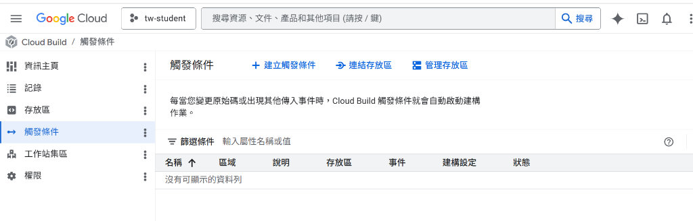

GitOps Workflow


# 推送代碼至生產分支
git add .
git commit -m "feat: upgrade pipeline"
git push origin main
STEP 01
GitHub 源碼代控
開發流程始於 GitHub。我們採用 GCP 第 2 代連線 (2nd Gen)，透過 OAuth 2.0 建立受信任的專屬連結。當開發者推送至 main 分支，GCP 將即時接收事件通告。
ProviderGitHub Enterprise
AuthOAuth 2.0 Handshake

# Cloud Build 自動拉取與編譯
steps:
- name: 'gcr.io/cloud-builders/docker'
args: ['build', '-t', 'gcr.io/$PROJECT_ID/atlas', '.']
STEP 02
GCP 原生自動編譯
GCP 會根據儲存在 Secret Manager 的安全憑證，主動「拉取」源碼。建構器會自動讀取 infra/cloudbuild.yaml 組態，無需手動配置編譯腳本。
EngineCloud Build Core
RuntimesNode.js 25 (Alpine)

# 映像檔版本管理 (Semantic Versioning)
gcloud artifacts repositories list \
--project=tw-student \
--location=asia-east1
STEP 03
代碼容器鏡像
編譯後的鏡像將被妥善儲存於 Artifact Registry。這不僅提供了企業級的弱點掃描機制，更保證了在多機房部署時的極低拉取延遲。
RegistryGoogle Artifact GCR
SecurityVulnerability Scanning

# 部署至台北 (asia-east1) 節點
gcloud run deploy tw-student-portal \
--image asia-east1-docker.pkg.dev/atlas \
--region asia-east1
STEP 04
無伺服器部署
建置後自動部署至 Google Cloud Run。服務運行於台北 (asia-east1) 數據中心，確保台灣使用者享有毫秒級的極速載入體驗。
LocationAsia-East1 (Taipei)
ScalingServerless Auto-scale

# CDN 全球分流與預覽
firebase deploy --only hosting \
--project tw-student \
--message "v1.2.0 production-ready"
STEP 05
前端邊緣託管
靜態資源與前端文件將透過 Firebase Hosting 進行分流。藉由全球節點的快取，確保無論身在何處，都能享有首屏即現的高效服務。
TrafficMulti-CDN Delivery
CacheNext-Gen Edge Caching

# 啟動 GitHub 連線初始化
gcloud builds connections create github "github-host" \
--region=asia-east1
# 驗證連線狀態
gcloud builds connections list --region=asia-east1
STEP 06 (INIT)
雲端主機連線
透過第 2 代連線機制將 GitHub 帳務連結至 GCP 專案，確保所有的源碼與憑證皆受到 IAM 管理策略 的保護，而非零散於開發者個人的 Secrets 中。
Security
OAuth 2.0 Encrypted
Latency
Direct Backbone

# 注入日誌寫入權限 (IAM Hardening)
gcloud projects add-iam-policy-binding tw-student \
--member="serviceAccount:firebase-adminsdk-fbsvc@tw-student.iam.gserviceaccount.com" \
--role="roles/logging.logWriter"
STEP 07 (CONFIG)
全自動化觸發核心
將連線後的 Repository 綁定至特定的 Artifact Registry。透過路徑過濾機制，僅在 infra/ 變動時觸發重新編譯，節省運算成本並提升部署效率。
Triggering
Event-based (Webhook)
Registry
Artifact Registry GCR
Ready to Scale
部署作業完成
臺灣教育 Atlas 已成功建立全自動 GitOps 部署管線。當代碼更新時，系統將自動處理從鏡像編譯至全球分流的所有細節。
EnvironmentProduction Ready
Reliability99.9% SLI Target
ScaleAuto-Scaling Active